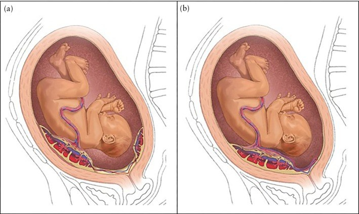
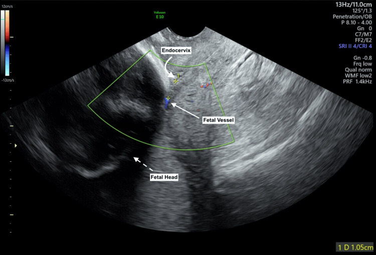
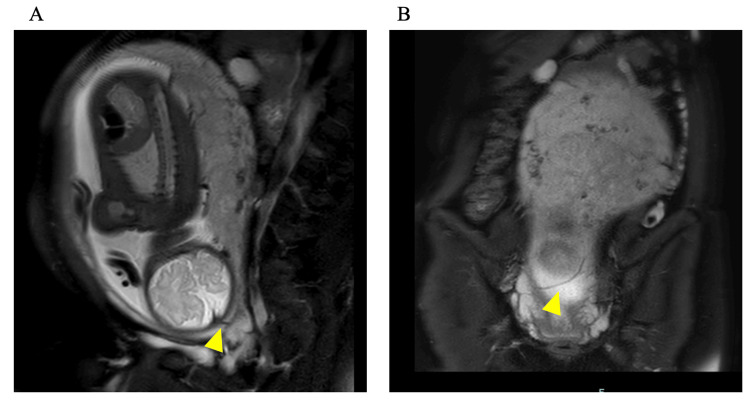
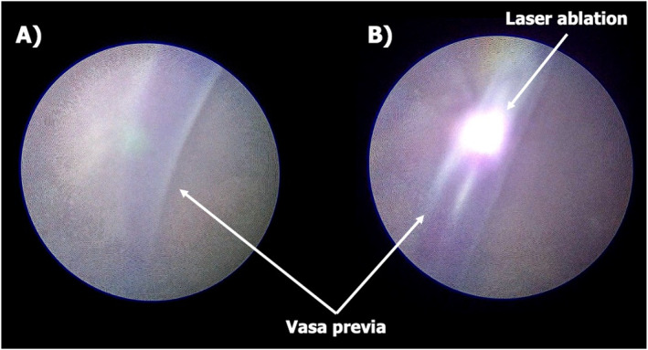

1603 — Vasa previa type II–III: chẩn đoán bằng Doppler đường âm đạo, ngưỡng 5 cm và đốt laser qua nội soi thai thay cho mổ lấy thai sớm
Tags: pattern:vasa-previa pattern:mach-mau-tien-dao vung:co-tu-cung vung:nhau-thai score:5cm protocol:TVUS-Doppler protocol:MRI-thai protocol:fetoscopic-laser
Mức chắc chắn (certainty): tổng hợp y văn (literature synthesis) — tổng hợp từ 1 nghiên cứu đoàn hệ so sánh đốt laser qua nội soi thai (FLA) với xử trí chuẩn (Backley 2026, 67 thai), 1 tổng quan hệ thống 54 ca FLA (Ruano 2025), 1 bài lập luận về ngưỡng 5 cm (Schenone 2025), 1 nghiên cứu dân số UKOSS (Attilakos 2024, 51 ca), 1 loạt 55 ca theo thể bánh nhau (Tachibana 2021) và 2 ca nguyên văn có ảnh mở; số liệu đối chiếu trực tiếp PMCID trong sources.md.
1. Tổng quan bệnh học – cơ chế hình ảnh
- Định nghĩa: vasa previa (VP) là tình trạng mạch máu của thai nhi chạy trong màng ối, không được bảo vệ bởi bánh nhau hay dây rốn (không có Wharton's jelly), băng ngang hoặc nằm sát lỗ trong cổ tử cung. Vì thành mạch mỏng và không có đệm, vỡ màng ối hoặc cơn co tử cung có thể làm rách mạch → thai mất máu cấp (exsanguination) trong vài phút.
- Dịch tễ: 1/2.500–5.000 thai kỳ; tổng quan 24 nghiên cứu gộp 7,9/10.000 thai. Tại Anh (UKOSS 2014–2015): 6,64/100.000 ca sinh (~1/15.062) — tức là chỉ các ca được chẩn đoán, con số thật cao hơn.
- Tử vong khi KHÔNG chẩn đoán trước sinh (số liệu quyết định):
- Loạt 155 ca của Oyelese: 94 ca không được chẩn đoán trước sinh → tử vong chu sinh 56%.
- Tổng quan hệ thống của Zhang: thai lưu 27,4%, tử vong sơ sinh 15,8%, 58% trẻ sống có di chứng thiếu oxy.
- UKOSS: 28 ca chẩn đoán trước sinh → 0 tử vong, 0 HIE; 23 ca chỉ phát hiện quanh sinh → tử vong chu sinh 37,5%, 47% trẻ sống bị HIE.
- Chẩn đoán trước sinh làm giảm 25 lần odds tử vong chu sinh và 50 lần odds bệnh suất sơ sinh; tỷ lệ tử vong gộp ở nhóm được chẩn đoán chỉ 0,94%.
- Ba thể (phân loại theo giải phẫu bánh nhau):
- Type I: dây rốn bám màng (velamentous cord insertion), mạch chạy từ chỗ bám tới bánh nhau qua màng.
- Type II: mạch nối giữa hai thùy của bánh nhau (bánh đôi/bánh phụ – bilobed/succenturiate).
- Type III: mạch rời bờ bánh nhau rồi quay lại bánh nhau ở vị trí khác ("quỹ đạo boomerang"), thường KHÔNG có dây rốn bám màng và không có bánh phụ — đây là thể dễ bỏ sót nhất.
- Yếu tố nguy cơ: hỗ trợ sinh sản (ART) — 60,0% type I và 25,0% type không-I; bánh đôi/bánh phụ; rau bám thấp (61,8% ca lúc chẩn đoán); song thai; tiền sử rau bám thấp ở quý II.
- TẠI SAO hình ảnh trông như vậy (vật lý + giải phẫu):
- Mạch máu thai trong màng không có mô đệm nên trên siêu âm là cấu trúc ống song song, thành mỏng, di động theo màng ối; trên Doppler màu hiện dòng đỏ–xanh rõ vì vận tốc máu thai cao.
- Doppler xung (pulsed-wave) cho dạng sóng động mạch rốn (nhấp nháy theo tim thai) — đây là tiêu chuẩn phân biệt với tĩnh mạch mẹ (dòng liên tục, thay đổi theo nhịp thở).
- Khi cổ tử cung mở đến 10 cm, mọi mạch trong bán kính 5 cm quanh lỗ trong đều có thể bị xé → ngưỡng 5 cm có cơ sở cơ học, không phải con số tùy tiện.
- Trên MRI, mạch thai là cấu trúc dòng chảy rỗng tín hiệu (flow void) trong màng, thấy rõ khi bánh nhau mặt sau hoặc bánh đôi — nơi siêu âm bị che bởi bóng âm của thai.
2. Mẫu hình + chẩn đoán phân biệt theo vị trí (gamut)
- Mẫu hình A — "dây rốn bám màng + mạch băng qua cổ tử cung": type I; thường chẩn đoán sớm (trung vị 21,4 tuần trong loạt Tachibana), hay gặp ở thai ART.
- Mẫu hình B — "mạch nối hai thùy bánh nhau": type II; chẩn đoán muộn hơn (28,6 tuần), thường kèm rau bám thấp; là thể phù hợp nhất với đốt laser vì chỉ nuôi một phần bánh nhỏ (≤ 10% thể tích bánh).
- Mẫu hình C — "mạch rời bờ bánh rồi quay lại, không có bánh phụ": type III; dễ bị bỏ qua vì không có yếu tố nguy cơ điển hình; có thể chỉ thấy một mạch đơn thay vì cặp động–tĩnh.
- Mẫu hình D — "dây rốn nằm trước ngôi thai (cord presentation)": dây rốn có Wharton's jelly, dày hơn, di động; không phải VP nhưng cùng nguy cơ sa dây rốn khi vỡ ối.
- Mẫu hình E — "cấu trúc mạch ở cổ tử cung nhưng là mạch MẸ": giãn tĩnh mạch cổ tử cung (cervical varix), dòng liên tục, không có dạng sóng động mạch rốn; Valsalva làm thay đổi rõ.
- Mẫu hình F — "rau tiền đạo có xoang rìa lớn": mạch thuộc tuần hoàn mẹ, nằm trong bánh; phân biệt bằng Doppler và bằng việc mạch không băng qua màng ối.
- Gợi nhớ 4 câu hỏi tại máy siêu âm: (1) mạch có nằm trong màng không? (2) cách lỗ trong bao nhiêu cm? (3) dạng sóng là động mạch rốn hay tĩnh mạch mẹ? (4) thể nào (I/II/III) và bánh nhau có thùy phụ không?

(a) Type II: mạch nối bánh chính với bánh phụ/thùy thứ hai. (b) Type III: mạch rời bờ bánh và quay lại bánh ở vị trí khác, không có bánh phụ. Cả hai đều là mục tiêu của đốt laser. Nguồn: Backley S et al., Ultrasound Obstet Gynecol 2026, CC BY 4.0.3. Bảng so sánh phân biệt (ma trận đối chiếu)
| Thực thể (entity) | Hình ảnh điển hình (TVUS/Doppler/MRI) | Chốt vào (rule-in) | Chốt loại (rule-out) | Gợi ý xác nhận |
|---|---|---|---|---|
| Vasa previa type I | Mạch trong màng từ dây rốn bám màng băng qua lỗ trong; Doppler động mạch rốn | Thấy điểm bám dây rốn vào màng + mạch nối tới bánh | Có bánh phụ nối hai thùy → type II | TVUS + Doppler màu; quét cả mặt phẳng không đứng dọc |
| Vasa previa type II | Mạch nối bánh chính ↔ bánh phụ/bánh đôi; thường kèm rau bám thấp | Hai thùy bánh + mạch nối băng qua cổ tử cung | Không có thùy phụ, mạch quay lại bánh → type III | MRI khi bánh mặt sau; Doppler xung xác nhận động mạch |
| Vasa previa type III | Mạch rời bờ bánh rồi quay lại, không có bánh phụ, có thể một mạch đơn | Mạch nằm trong màng trên lỗ trong + bánh nhau bình thường | Có dây rốn bám màng rõ → type I; có thùy phụ → type II | Quét toàn bộ đoạn dưới; MRI; đối chiếu giải phẫu bánh sau sinh |
| Cord presentation | Dây rốn (có Wharton's jelly) nằm trước ngôi, dày, di động | Cấu trúc dây rốn 3 mạch, có mô đệm | Mạch đơn trong màng, không có mô đệm → VP | Doppler; theo dõi khi chuyển dạ |
| Cervical varix (mạch mẹ) | Cấu trúc tĩnh mạch giãn ở cổ tử cung, dòng liên tục | Dạng sóng tĩnh mạch mẹ, đổi theo Valsalva/nhịp thở | Dạng sóng động mạch rốn → VP | Doppler xung + nghiệm pháp Valsalva |
| Rau tiền đạo (placenta previa) | Bánh nhau che lỗ trong; mạch nằm trong bánh, không trong màng | Mô bánh nhau che lỗ trong | Chỉ có mạch trong màng, không có mô bánh → VP | TVUS; phân biệt “rau bám thấp” khi bờ bánh cách lỗ trong < 20 mm |
| Dây rốn bám màng KHÔNG có mạch qua cổ tử cung | Điểm bám màng nhưng mạch cách lỗ trong > 5 cm | Khoảng cách > 5 cm ở mọi mặt phẳng | Mạch trong ≤ 5 cm → vẫn phải xử trí như VP | Quét 3D/STIC; đo khoảng cách ngắn nhất |

Đầu dò đặt ở cùng đồ sau, thấy mạch thai (fetal vessel) chạy trong màng, đầu thai (fetal head) ở dưới, lỗ trong cổ tử cung (endocervix) ở trên. Thước đo của máy ghi 1,05 cm từ mạch tới lỗ trong — nằm sâu trong ngưỡng 5 cm. Nguồn: Barraza A et al., Cureus 2025, CC BY 4.0.4. Protocol chụp + hệ phân độ/điểm chuẩn hóa
Bước 1 — sàng lọc (18–26 tuần, mọi thai kỳ có yếu tố nguy cơ):
- Siêu âm đường âm đạo (TVUS) + Doppler màu: độ nhạy phát hiện trung vị 93%, độ đặc hiệu 99–100% ở 18–26 tuần.
- Quét TOÀN BỘ đoạn dưới tử cung, không chỉ mặt phẳng đứng dọc: trong loạt 55 ca, 67,3% ca chỉ được chẩn đoán nhờ mặt phẳng KHÔNG đứng dọc — bỏ sót mặt phẳng này là lý do hay gặp nhất của chẩn đoán muộn.
- Doppler xung xác nhận dạng sóng động mạch rốn; dùng nghiệm pháp Valsalva (20,0% ca trong loạt Tachibana) để phân biệt tĩnh mạch mẹ với mạch thai.
- Với rau bám thấp ở quý II, nên quét lại quanh 32 tuần vì một số ca VP chỉ lộ ra khi tử cung lớn lên.
Bước 2 — ngưỡng chẩn đoán: 2 cm hay 5 cm?
| Tổ chức / tài liệu | Ngưỡng | Ghi chú |
|---|---|---|
| RANZCOG 2019 | 2 cm | Cấu trúc ống có dòng chảy, Doppler xung |
| ISUOG 2023 | < 2 cm (“thường < 2 cm”) | Kết hợp siêu âm bụng + âm đạo |
| SOGC 2023 | < 2 cm = vasa previa; 2–5 cm = “low-lying fetal vessels” | Tách riêng nhóm 2–5 cm và khuyến cáo cân nhắc mổ lấy thai |
| Bài lập luận 2025 (Schenone) + đồng thuận Delphi 57 chuyên gia | 5 cm | Lý do: cổ tử cung mở 10 cm → bán kính 5 cm đều nguy hiểm |
| FLUMEN trial (FDA chấp thuận) | 5 cm | Tiêu chuẩn tuyển chọn cho đốt laser |
- Quan điểm của bài: dùng ≤ 5 cm làm ngưỡng an toàn; nếu chỉ dùng 2 cm, một nhóm thai có mạch 2–5 cm sẽ bị cho sinh đường âm đạo và có nguy cơ chết thai. Báo cáo ca 2,8 cm đã có tử vong sơ sinh sau khi “hết vasa previa”.
Bước 3 — phương thức bổ trợ:
- 3D/STIC, HD live flow, 3D power Doppler: lập bản đồ đường đi của mạch để tránh cắt vào mạch khi mổ.
- MRI thai: chỉ định khi bánh mặt sau, bánh đôi, hoặc siêu âm không kết luận; mạch thai là flow void trong màng. MRI cũng giúp đánh dấu vị trí rạch tử cung.
Bước 4 — xử trí chuẩn (standard management – SM):
- Nhập viện theo dõi từ 30–34 tuần (SMFM) hoặc 30–31 tuần (Tachibana); theo dõi tim thai, corticosteroid khi có nguy cơ sinh non.
- Mổ lấy thai (CS) chủ động 34–37 tuần (ACOG/SMFM); loạt Nhật chọn 35–36 tuần; UKOSS: mổ trung vị 36 tuần, 32% phải mổ cấp trước kế hoạch.
- Kỹ thuật mổ: lập bản đồ bánh/mạch trước rạch; tránh rạch qua bánh hoặc mạch; với bánh mặt trước dùng Ward technique (rạch cơ tử cung sang bên rồi bóc tách); lấy thai trong màng ối (en caul) khi mạch nằm sát diện rạch.
- Tuyệt đối không thăm âm đạo/khám trong/bấm ối khi chưa loại trừ VP.
Bước 5 — đốt laser qua nội soi thai (fetoscopic laser ablation – FLA) cho type II–III:
| Chỉ số | FLA | Xử trí chuẩn (SM) |
|---|---|---|
| Tuổi thai khi sinh (trung vị) | 36,0 tuần (IQR 35,0–37,6) | 34,4 tuần (IQR 33,4–35,0) |
| Sinh đường âm đạo | 62,9% (loạt 35 ca) / 50% (gộp 54 ca) | 0% (chủ động mổ) |
| Thời gian nằm viện trước sinh | 1 ngày (IQR 0–3) | 16 ngày (IQR 7–23) |
| Nguy cơ sinh non | HR 0,24 (0,14–0,44) | Tham chiếu |
| Vào NICU | 34,3% | 96,9% |
| Truyền máu sơ sinh | 0% | 18,8% |
| Tử vong thai/sơ sinh | 0 | 0 |
- Chọn ca: type II/III có đường đi mạch rõ; type I thường khó vì mạch xuất phát từ bánh và không có thùy phụ để “cô lập”.
- Thời điểm: đa số làm 31–32 tuần (88,6%); tránh < 28 tuần** (nguy cơ PPROM) và **> 34 tuần (mạch to, ối đục vì vernix, khó xác nhận tắc hoàn toàn). Có thể làm sớm 28 tuần nếu cổ tử cung ngắn 20 mm hoặc chảy máu.
- Kỹ thuật: vào bằng fetoscope, amnioinfusion 71,4%, laser diode 600 hoặc 800 µm (như trong TTTS); đường kính mạch trung vị 0,3 cm (0,1–0,5); thời gian mổ 60 phút (34–125).
- Kết quả: thành công kỹ thuật 98,1% (53/54), sống 100%, không có biến chứng mẹ nặng; 1 ca phải làm lại, 1 ca bỏ cuộc phải mổ ngay.
- Biến chứng cần theo dõi: PPROM, tách màng ối, tái thông mạch, chorioamnionitis; theo dõi 24 giờ sau thủ thuật, tocolysis (nifedipine/magnesium), siêu âm Doppler kiểm tra tắc mạch trước khi ra viện.
flowchart TD
A[Thai có mạch trong màng trong vòng 5 cm tới lỗ trong cổ tử cung] --> B[Xác định thể: I, II hay III]
B --> C[Tư vấn đa chuyên khoa: sản, can thiệp bào thai, sơ sinh]
C --> D{Thể II hoặc III, đường đi mạch rõ?}
D -->|Không| E[Xử trí chuẩn: nhập viện 30-34 tuần, mổ lấy thai 34-37 tuần]
D -->|Có| F{Thai 28-32 tuần, không có chống chỉ định?}
F -->|Không| E
F -->|Có| G[Đốt laser qua nội soi thai 31-32 tuần]
G --> H[Theo dõi 24 giờ, tocolysis, Doppler kiểm tra tắc mạch]
H --> I{Tắc hoàn toàn?}
I -->|Không| J[Làm lại hoặc chuyển mổ lấy thai]
I -->|Có| K[Theo dõi ngoại trú, siêu âm định kỳ]
K --> L[Cho sinh đường âm đạo nếu không có chỉ định khác]
E --> M[Mổ lấy thai chủ động, lấy thai trong màng khi mạch sát diện rạch]
J --> M
5. Biến thể bình thường và cạm bẫy
- Bẫy nguy hiểm nhất: tin vào ngưỡng 2 cm. Ca mạch 2,8 cm được coi là “đã hết vasa previa”, 2 tuần sau chảy máu và trẻ tử vong; ngưỡng 5 cm mới phản ánh đúng cơ học cổ tử cung mở 10 cm.
- "Hết vasa previa" không đồng nghĩa an toàn: 26% (43/165) ca được gọi là “giải quyết” khi theo dõi; type I hay “hết” hơn type II (38,7% vs 12,5%). Tỷ lệ “hết” giảm theo tuổi thai: 66,7% (< 20 tuần), **40,5%** (20–24), **26,3%** (24–28), **16,7%** (> 28). Trong loạt 55 ca Nhật, 21,8% “hết” nhưng tất cả vẫn mổ lấy thai.
- Type III không có “cờ đỏ” kinh điển: không dây rốn bám màng, không bánh phụ, có khi chỉ một mạch — nếu chỉ quét mặt phẳng đứng dọc sẽ bỏ sót; 25% ca type không-I được chẩn đoán sau 32 tuần.
- Bánh mặt sau/bánh đôi bị bóng âm của thai che → quét mặt phẳng chếch/3D hoặc MRI.
- Nhầm tĩnh mạch mẹ (cervical varix) thành mạch thai: dùng Doppler xung + Valsalva; mạch thai có dạng sóng động mạch rốn, tĩnh mạch mẹ thì không.
- Dương tính giả 17% khi đối chiếu giải phẫu bệnh sau sinh — vẫn phải xử trí như VP cho tới khi sinh, nhưng cần xác nhận bánh nhau sau sinh để tư vấn lần sau.
- Cord presentation ≠ vasa previa: dây rốn có Wharton's jelly, dày, 3 mạch; xử trí khác (theo dõi chuyển dạ, mổ khi sa dây).
- Sai lầm trong mổ: rạch tử cung qua bánh/mạch gây mất máu thai cấp; phải lập bản đồ trước mổ, dùng Ward technique hoặc en caul, và không bấm ối khi mạch nằm sát.
- Không được cho sinh đường âm đạo chỉ vì “không chảy máu” hoặc vì mạch “chỉ còn 3–4 cm”; nguy cơ vỡ mạch khi mở cổ tử cung vẫn còn.
6. Tự lượng giá — Blind Quiz
Ca 1 — Thai 32 tuần, không triệu chứng, siêu âm thấy cấu trúc mạch ở cổ tử cung. Nhìn ảnh, mô tả trước.
- Gợi ý lâm sàng: thai tự nhiên, không rau bám thấp trên siêu âm bụng.
- Câu hỏi: (1) Cấu trúc mũi tên là gì, cách lỗ trong bao nhiêu? (2) Thể nào? (3) Ba lựa chọn xử trí và cách tư vấn?
Bấm để hiện đáp án (findings + chẩn đoán)
- Dấu hiệu: mạch thai chạy trong màng, cách lỗ trong 1,05 cm, sát đầu thai; Doppler màu có tín hiệu dòng chảy.
- Chẩn đoán: vasa previa type I (dây rốn bám màng) — nằm trong ngưỡng nguy hiểm ≤ 5 cm.
- Xử trí: (a) nhập viện theo dõi + mổ lấy thai 34–37 tuần; (b) đốt laser nếu đủ tiêu chuẩn (thường type II/III, 31–32 tuần) — ca này type I nên không phải ứng viên lý tưởng; (c) theo dõi ngoại trú chỉ khi đã tư vấn rõ nguy cơ và có khả năng mổ cấp cứu trong 30 phút.
- Nguồn: Barraza A et al., Cureus 2025, CC BY 4.0, PMCID PMC11964157.
Ca 2 — Thai 35 tuần, không rau bám thấp, không bánh phụ, nhưng có mạch băng qua cổ tử cung. Nhìn MRI, mô tả trước.

- Gợi ý lâm sàng: siêu âm trước đó kết luận “rau bám thấp đã di chuyển”; mạch chỉ thấy rõ khi quét lại muộn.
- Câu hỏi: (1) Cấu trúc đầu mũi tên vàng? (2) Vì sao thể này dễ bỏ sót? (3) Xử trí?
Bấm để hiện đáp án (findings + chẩn đoán)
- Dấu hiệu: mạch thai (flow void) chạy trong màng, sát lỗ trong cổ tử cung, không thấy mô bánh hay thùy phụ ở vị trí đó.
- Chẩn đoán: vasa previa type III — mạch rời bờ bánh rồi quay lại bánh, không có dây rốn bám màng và không có bánh phụ, nên không có “cờ đỏ” để nghi ngờ.
- Vì sao dễ bỏ sót: chỉ quét mặt phẳng đứng dọc; “rau bám thấp di chuyển” làm yên tâm giả; type III thường một mạch đơn.
- Xử trí: mổ lấy thai chủ động 34–37 tuần, lập bản đồ mạch trước rạch; không sinh đường âm đạo dù mạch “xa hơn 2 cm”.
- Nguồn: Aramaki S et al., Cureus 2026, CC BY 4.0, PMCID PMC13066703.
Ca 3 — Hình nội soi thai dưới đây đang làm gì, và kết quả kỳ vọng là gì?

- Gợi ý lâm sàng: thai 31 tuần, type II, mẹ muốn tránh mổ lấy thai sớm.
- Câu hỏi: (1) Kỹ thuật? (2) Tiêu chuẩn chọn ca và thời điểm? (3) Tỷ lệ thành công và biến chứng?
Bấm để hiện đáp án (findings + chẩn đoán)
- (A) Nhìn thấy mạch tiền đạo trong màng; (B) đốt laser (laser ablation) làm tắc mạch.
- Chỉ định: type II/III, đường đi mạch rõ, thường 31–32 tuần (88,6% ca), tránh < 28** và **> 34 tuần; có thể sớm hơn nếu cổ tử cung ngắn hoặc chảy máu.
- Kết quả: thành công kỹ thuật 98,1%; sinh đường âm đạo 50–62,9%; sống 100%; tuổi thai sinh trung vị 36,0 vs 34,4 tuần so với xử trí chuẩn; vào NICU 34,3% vs 96,9%.
- Biến chứng: PPROM, tách màng ối, tái thông mạch, bỏ cuộc/phải làm lại (~2–3%).
- Nguồn: Ruano R et al., Prenat Diagn 2025 (PMC12611538, CC BY 4.0); Backley S et al., Ultrasound Obstet Gynecol 2026 (PMC12951256, CC BY 4.0).
Bài liên quan chéo
- 563 — Bất thường rau–bánh nhau sớm: rau tiền đạo, vasa previa & circumvallate
- 566 — Song thai: xác định màng đệm/màng ối & TTTS/TAPS
- 565 — Sàng lọc hình thái thai & Doppler sản khoa
- 569 — Sinh non trong song thai: cổ tử cung ngắn, progesterone, cerclage
Ảnh
- Nguồn + giấy phép từng ảnh:
images/CREDITS.md. Tên file theo mẫuNNN_slug_Modality_SourceID.jpg. - Cả 4 ảnh đều CC BY 4.0 từ Europe PMC full-text; không crop, không ghép.
Không dùng để chẩn đoán độc lập khi chưa có người hướng dẫn.